2 How Atoms Join into Molecules
Learning objectives
After reading this chapter you should be able to:
- Describe how the electrons of an atom are arranged in shells, subshells and orbitals, and write the electron configurations of hydrogen, carbon, nitrogen, oxygen and phosphorus.
- Explain how atoms form covalent bonds by sharing electrons, and predict the number of bonds formed by each of the five elements of RNA.
- Explain the geometry of simple molecules, the polarity of bonds, and the forces that act between molecules, with water as the central example.
- Use the concepts of enthalpy, entropy and Gibbs free energy to decide whether a reaction can occur, and explain how temperature and catalysts affect its rate.
2.1 Electrons and orbitals
From nuclei to chemistry
Chapter 1 followed the nuclei of hydrogen, carbon, nitrogen, oxygen and phosphorus from their origin in the Big Bang and in stars. Nuclei, however, do not take part in chemical reactions. In every process described from here onwards, nuclei remain unchanged, and only the arrangement of electrons changes. Chemistry is the study of these rearrangements. To understand why atoms combine as they do, it is first necessary to know how the electrons of an isolated atom are arranged.
Energy levels and the electronvolt
The electrons of an atom cannot have any energy whatever. They occupy a set of discrete energy levels, determined by the attraction of the positive nucleus and the repulsion between electrons. This is a consequence of quantum mechanics, the physical theory that describes particles on the scale of atoms; its mathematical form is beyond the scope of this book, but its results can be stated precisely.
Energies on the atomic scale are conveniently measured in electronvolts (eV). One electronvolt is the energy gained by a particle with one elementary charge when it moves through an electric potential difference of one volt. Because the elementary charge is exact (Section 1.1), so is the electronvolt: 1 eV = 1.602 176 634 × 10−19 J (National Institute of Standards and Technology, n.d.a).
Orbitals, shells and subshells
The state of an electron in an atom is described by an orbital: a region around the nucleus, described by a mathematical function called a wavefunction, in which an electron of a given energy is likely to be found. An electron in an atom does not move along a fixed path; the orbital gives only the probability of finding it at each point in space.
Orbitals are grouped as follows.
- A shell is a set of orbitals with the same principal quantum number n, which takes the values 1, 2, 3, … Electrons in shells with larger n are, on average, farther from the nucleus and less tightly bound.
- Within a shell, orbitals are divided into subshells, labelled s, p, d and f. The shell with n = 1 contains only an s subshell; n = 2 contains s and p; n = 3 contains s, p and d.
- An s subshell contains one orbital, a p subshell three, a d subshell five and an f subshell seven.
A subshell is written with its shell number followed by its letter: 1s, 2s, 2p, 3s, 3p, 3d and so on. An s orbital is spherically symmetric about the nucleus. The three p orbitals of a subshell each have two lobes on opposite sides of the nucleus and are directed along three mutually perpendicular axes, conventionally labelled x, y and z (Figure 2.1).
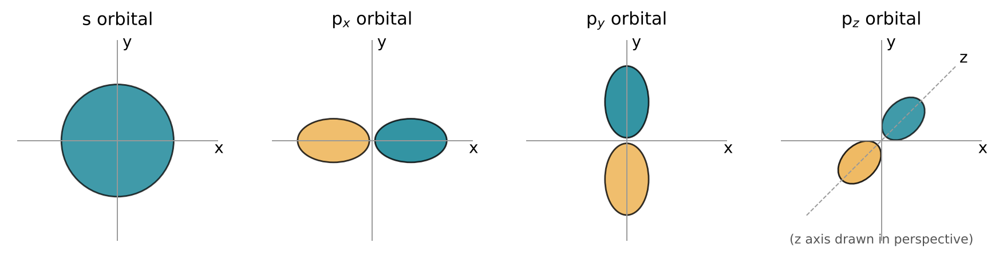
The Pauli exclusion principle
The number of electrons that each orbital can hold is fixed by the Pauli exclusion principle: no two electrons in an atom can be in exactly the same quantum state. Electrons possess an intrinsic property called spin, which can take one of two values, conventionally written as “up” and “down”. An orbital can therefore hold at most two electrons, and only if their spins are opposite.
It follows that an s subshell holds at most 2 electrons, a p subshell 6, a d subshell 10 and an f subshell 14. Shell n contains n2 orbitals and can therefore hold at most 2n2 electrons: 2 in the first shell, 8 in the second and 18 in the third.
Electron configurations
The electron configuration of an atom lists how many electrons occupy each subshell. It is written as the subshell labels with the number of electrons as a superscript. In the lowest-energy state of an atom, its ground state (Section 1.3), the subshells are filled approximately in order of increasing energy: 1s, 2s, 2p, 3s, 3p, then 4s and 3d. Table 2.1 gives the measured ground-state configurations of the five elements of RNA, together with some of their neighbours in the periodic table (Kramida et al. 2024).
| Element | Z | Electron configuration | Valence electrons | First ionisation energy (eV) |
|---|---|---|---|---|
| Hydrogen | 1 | 1s1 | 1 | 13.598 |
| Helium | 2 | 1s2 | (2, full shell) | 24.587 |
| Carbon | 6 | 1s2 2s2 2p2 | 4 | 11.260 |
| Nitrogen | 7 | 1s2 2s2 2p3 | 5 | 14.534 |
| Oxygen | 8 | 1s2 2s2 2p4 | 6 | 13.618 |
| Neon | 10 | 1s2 2s2 2p6 | (8, full shell) | 21.565 |
| Sodium | 11 | [Ne] 3s1 | 1 | 5.139 |
| Phosphorus | 15 | [Ne] 3s2 3p3 | 5 | 10.487 |
| Sulfur | 16 | [Ne] 3s2 3p4 | 6 | 10.360 |
The notation [Ne] 3s2 3p3 for phosphorus means that phosphorus has the ten electrons of a neon atom in its first two shells, plus two electrons in the 3s subshell and three in the 3p subshell: 15 electrons in all, equal to its atomic number.
Figure 2.2 shows the configurations of the RNA elements as an energy-level diagram. Each box is one orbital, and each arrow is one electron, pointing up or down according to its spin. Where electrons occupy a p subshell that is less than half full, they spread over separate orbitals with parallel spins before any orbital receives a second electron; this is known as Hund’s rule. Nitrogen and phosphorus, with three p electrons each, have one electron in each of their three p orbitals.
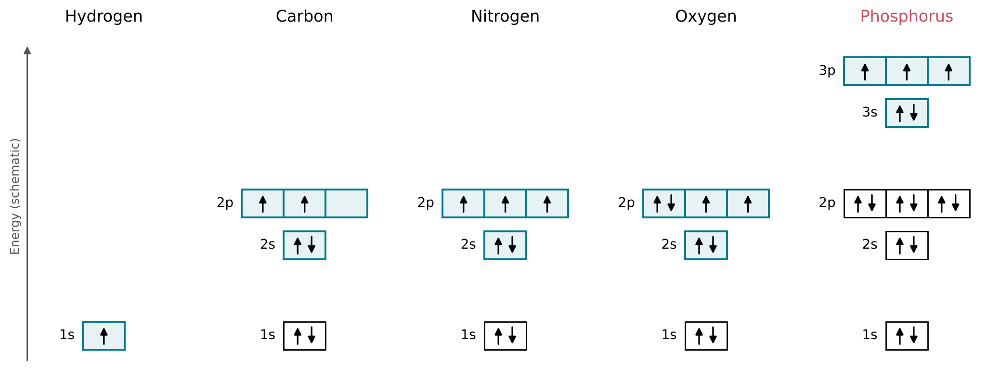
Valence electrons
The electrons in the outermost occupied shell are the valence electrons. They are the least tightly bound and the ones that take part in chemical bonding. Electrons in inner shells, called core electrons, are held more tightly and do not take part in bonding. Carbon has four valence electrons (2s2 2p2), nitrogen five (2s2 2p3), oxygen six (2s2 2p4) and phosphorus five (3s2 3p3). Hydrogen has a single electron, which is its valence electron.
Nitrogen and phosphorus lie in the same column, or group, of the periodic table, and both have five valence electrons in the configuration s2 p3. They differ in that the valence electrons of phosphorus are in the third shell rather than the second. This shared configuration is the reason for many chemical similarities between the two elements, and the difference in shell is the reason for some of the differences that will appear in later chapters.
Ionisation energy: a measure of how tightly electrons are held
The arrangement of electrons into shells is not merely a bookkeeping convention; it can be measured. The first ionisation energy of an atom is the minimum energy required to remove one electron from the neutral atom in its ground state, leaving a positive ion. Figure 2.3 shows the measured values for the first eighteen elements (Kramida et al. 2024).
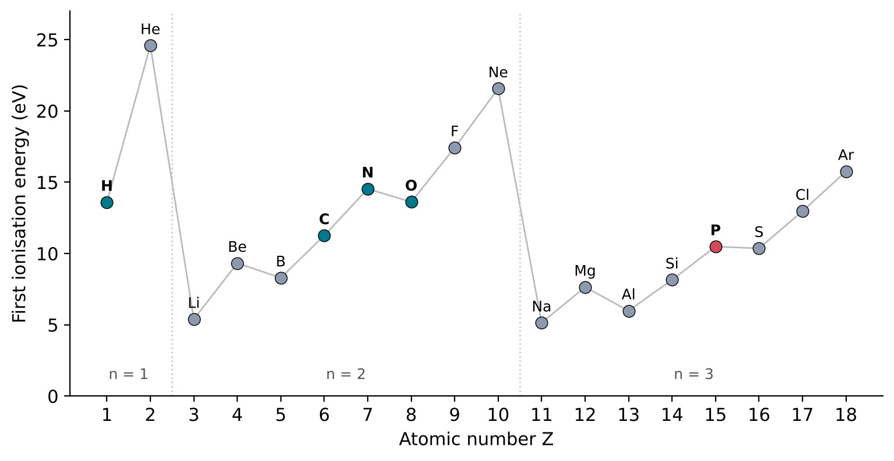
Two features of the figure confirm the shell structure. First, the noble gases helium (24.59 eV), neon (21.56 eV) and argon (15.76 eV) have the highest ionisation energies in their rows: their outermost shells or subshells are full, and their electrons are held most tightly. Second, the next elements, lithium (5.39 eV) and sodium (5.14 eV), have the lowest values: each has a single electron that begins a new shell, farther from the nucleus and shielded from it by the inner electrons (Kramida et al. 2024). Within a row, the ionisation energy tends to rise from left to right, because the nuclear charge increases while the electrons being removed remain in the same shell.
The ionisation energies of the RNA elements lie between about 10 and 15 eV. These values are large compared with the energy of thermal motion at the temperatures relevant to the origin of life, which is of the order of a few hundredths of an electronvolt per particle (the product of the Boltzmann constant, kB = 8.617 333 262 × 10−5 eV K−1, and the absolute temperature: about 0.026 eV at 25 °C, or 298.15 K) (National Institute of Standards and Technology, n.d.a). Isolated atoms of these elements therefore keep their electrons. They do, however, react with each other, by sharing electrons rather than losing them. This sharing, the covalent bond, is the subject of the next section.
Consequence for this book
The chemistry of RNA is determined by the valence electrons of five elements: one for hydrogen, four for carbon, five for nitrogen, six for oxygen and five for phosphorus. Every bond in the molecules described in the rest of this book is formed from these electrons.
2.2 The covalent bond
Completing a shell
Section 2.1 showed that atoms with completely filled shells, the noble gases, hold their electrons most tightly. Bonding between the elements of RNA can be described by a simple counting rule that follows from this. By sharing electrons, each atom tends to acquire the electron configuration of the nearest noble gas:
- Hydrogen shares electrons until it has two electrons around it, the configuration of helium.
- Carbon, nitrogen and oxygen share electrons until they have eight valence electrons, the configuration of neon. This is the octet rule.
Electrons shared in a bond count towards the shells of both atoms. An atom with v valence electrons therefore needs 8 − v shared electrons from its partners, and so forms 8 − v covalent bonds. This number is the valence of the atom (Table 2.2).
| Element | Valence electrons | Electrons needed | Usual number of covalent bonds |
|---|---|---|---|
| Hydrogen | 1 | 1 (to reach 2) | 1 |
| Carbon | 4 | 4 | 4 |
| Nitrogen | 5 | 3 | 3 |
| Oxygen | 6 | 2 | 2 |
The octet rule is a counting rule, not a law of nature, but it predicts correctly the bonding of carbon, nitrogen and oxygen in almost all the molecules in this book. Phosphorus, whose valence electrons are in the third shell, is an important exception: in phosphate, the form in which phosphorus occurs in RNA, each phosphorus atom is bonded to four oxygen atoms. How these bonds are best described is taken up when phosphate is introduced in Chapter 4.
Lewis structures
A Lewis structure represents the valence electrons of a molecule. Each line between two atom symbols stands for one shared pair of electrons, that is, one covalent bond. Pairs of valence electrons that belong to one atom only and are not shared are called lone pairs, and are drawn as pairs of dots. Figure 2.4 shows Lewis structures of some molecules that will appear repeatedly in this book.
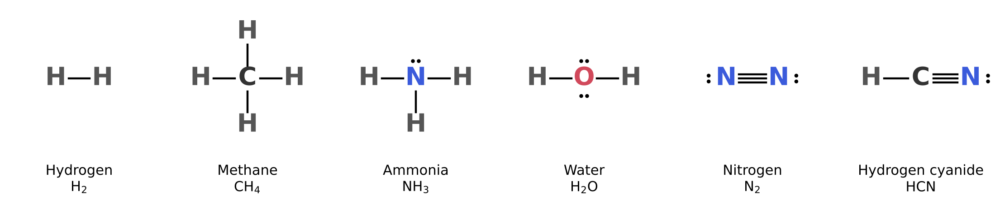
In methane, CH4, carbon shares one pair with each of four hydrogen atoms; its four valence electrons and the four from hydrogen give carbon an octet. In ammonia, NH3, nitrogen forms three bonds and keeps one lone pair. In water, H2O, oxygen forms two bonds and keeps two lone pairs. The measured lengths of these bonds are 1.087 Å for C–H in methane, 1.012 Å for N–H in ammonia and 0.958 Å for O–H in water (National Institute of Standards and Technology 2022). The lone pairs of nitrogen and oxygen are not inert: they are responsible for much of the chemistry of ammonia and water, including the hydrogen bonds discussed in Section 2.5.
Double and triple bonds
Two atoms can share more than one pair of electrons. Two shared pairs form a double bond, written with two lines, and three shared pairs form a triple bond, written with three. The number of shared pairs is called the bond order. In the nitrogen molecule, N2, the two nitrogen atoms share three pairs, so each nitrogen has three bonds and one lone pair, and an octet. In hydrogen cyanide, HCN, carbon forms one bond to hydrogen and a triple bond to nitrogen: four bonds in all, as the octet rule requires. Hydrogen cyanide appears again in Chapters 3 and 4, as a starting material in experiments on the synthesis of the building blocks of RNA.
The bond order has a measurable effect on the bond length. The three simplest compounds of carbon and hydrogen with two carbon atoms show this directly (Figure 2.5). In ethane, C2H6, the carbon atoms are joined by a single bond of length 1.536 Å; in ethylene, C2H4, by a double bond of 1.339 Å; and in acetylene, C2H2, by a triple bond of 1.203 Å (National Institute of Standards and Technology 2022). Each additional shared pair draws the two nuclei closer together. The same trend holds for nitrogen: the triple bond in N2 is 1.098 Å long (National Institute of Standards and Technology 2022), and the carbon-nitrogen triple bond in HCN 1.156 Å (National Institute of Standards and Technology 2022).
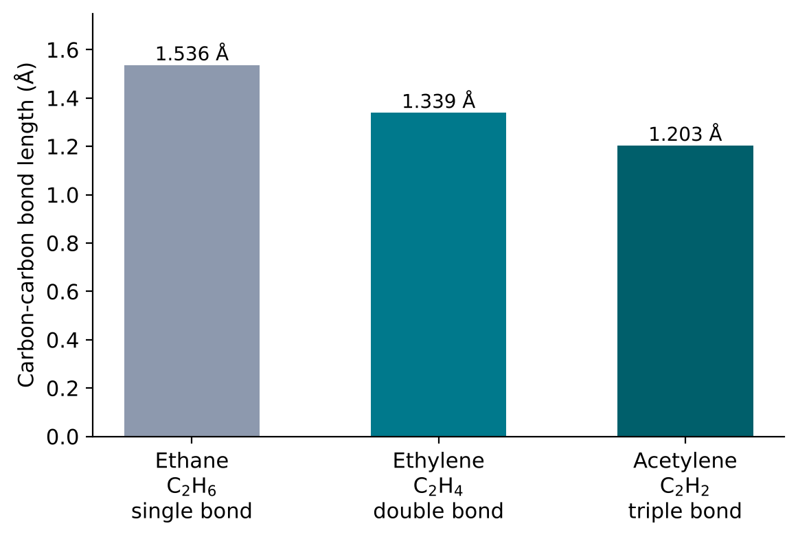
Consequence for this book
Every molecule on the path to RNA is held together by covalent bonds between hydrogen, carbon, nitrogen, oxygen and phosphorus. The octet rule predicts how many bonds each atom forms: four for carbon, three for nitrogen, two for oxygen and one for hydrogen. These numbers determine which molecules can exist, and therefore which structures are possible for the sugars, bases and phosphates that make up a nucleotide.
2.3 Molecular shape and why carbon forms four bonds
Molecules have shapes
A Lewis structure shows which atoms are bonded, but not how the atoms are arranged in space. Molecules have definite three-dimensional shapes, which can be measured by spectroscopy and diffraction methods. Shape matters for everything that follows in this book: whether two molecules fit together, whether a chain can fold, and whether a base pair can form all depend on the angles between bonds.
The shape of a molecule is described by its bond lengths (Section 2.2) and its bond angles, the angles between two bonds that share an atom. For the three simplest hydrides of the second-row elements, the measured angles are 109.47° for H–C–H in methane, 106.67° for H–N–H in ammonia and 104.48° for H–O–H in water (National Institute of Standards and Technology 2022).
Electron pairs repel each other
These angles can be understood with a simple model, valence-shell electron-pair repulsion (VSEPR). Its premise is that the electron pairs in the valence shell of a central atom, both bonding pairs and lone pairs, repel each other, and therefore arrange themselves around the atom as far apart as possible.
For four electron pairs, the arrangement that keeps them farthest apart points them towards the four corners of a regular tetrahedron, a solid with four triangular faces, with the central atom at its centre. The angle between any two of the four directions is
\[ \theta = \arccos\!\left(-\tfrac{1}{3}\right) \approx 109.47^{\circ} \]
where arccos is the inverse cosine function. The value follows from geometry alone. Methane, with four identical C–H bonds and no lone pairs, is a regular tetrahedron, and its measured angle, 109.471° (National Institute of Standards and Technology 2022), agrees with the geometric value.
Ammonia and water also have four electron pairs around the central atom, but some of them are lone pairs: one in ammonia and two in water (Figure 2.4). The four pairs still point roughly towards the corners of a tetrahedron, but the shape of the molecule is described by the positions of the atoms only. Ammonia is therefore a trigonal pyramid, with nitrogen at the apex and the three hydrogen atoms forming the base, and water is bent (Figure 2.6). The angles in both molecules are smaller than the tetrahedral angle, and smaller in water than in ammonia. VSEPR attributes this to the lone pairs, which are held by only one nucleus, spread more widely around it and push the bonding pairs closer together: the more lone pairs, the smaller the angle.
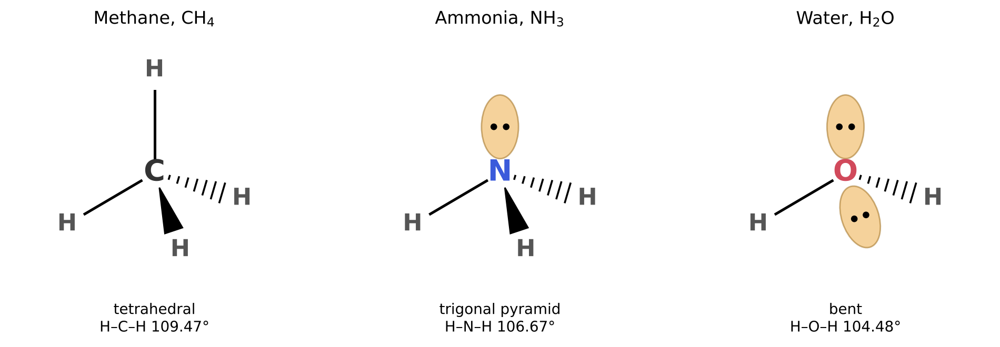
Hybrid orbitals
The ground-state configuration of carbon, 1s2 2s2 2p2, has only two unpaired electrons (Figure 2.2), yet carbon forms four bonds, and in methane all four are identical. Neither the spherical 2s orbital nor the three perpendicular 2p orbitals point towards the corners of a tetrahedron. These facts are reconciled by the concept of hybridisation: mathematical combinations of an atom’s s and p orbitals that produce a new set of equivalent orbitals, called hybrid orbitals, pointing in the directions of the bonds.
- Combining the 2s orbital with all three 2p orbitals gives four equivalent sp3 hybrid orbitals, pointing to the corners of a tetrahedron, 109.47° apart. One valence electron is placed in each, and each forms a bond. This describes carbon in methane and ethane, and the carbon atoms of the sugar ribose, as Chapter 4 will show.
- Combining the 2s orbital with two 2p orbitals gives three sp2 hybrid orbitals, lying in a plane at 120° to each other. The remaining 2p orbital stands perpendicular to that plane. This describes carbon in ethylene: each carbon forms three bonds in the plane, and the side-by-side overlap of the two remaining p orbitals forms the second bond of the double bond. The measured angles in ethylene, 117.6° for H–C–H and 121.2° for H–C–C (National Institute of Standards and Technology 2022), are close to 120°, and the molecule is flat.
- Combining the 2s orbital with one 2p orbital gives two sp hybrid orbitals, pointing in opposite directions, 180° apart. The two remaining p orbitals form the second and third bonds of a triple bond. This describes carbon in acetylene and in hydrogen cyanide, both of which are linear: the measured H–C–C angle in acetylene and H–C–N angle in HCN are both 180° (National Institute of Standards and Technology 2022).
A bond formed by direct, head-on overlap of orbitals along the line between two nuclei is called a sigma (\(\sigma\)) bond. A bond formed by side-by-side overlap of two parallel p orbitals, above and below that line, is called a pi (\(\pi\)) bond. A single bond is a \(\sigma\) bond; a double bond consists of one \(\sigma\) and one \(\pi\) bond; a triple bond of one \(\sigma\) and two \(\pi\) bonds (Figure 2.7).
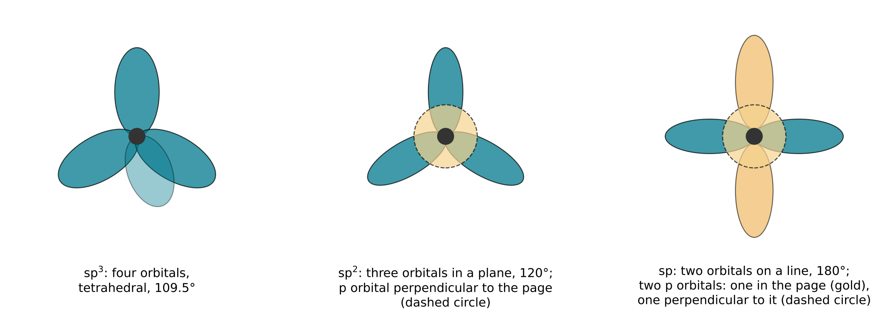
Hybridisation is a model, not a separate physical process: an atom does not first rearrange its orbitals and then bond. It is a way of describing the electron distribution of a bonded atom with orbitals that match the observed geometry. Within this book, its value is practical. From the number of bonds and lone pairs on an atom, it predicts the local shape of a molecule.
| Electron pairs around atom (bonds + lone pairs) | Hybridisation | Arrangement of pairs | Ideal angle | Examples |
|---|---|---|---|---|
| 4 | sp3 | tetrahedral | 109.5° | CH4, NH3, H2O |
| 3 | sp2 | trigonal planar | 120° | C2H4 |
| 2 | sp | linear | 180° | C2H2, HCN |
Consequence for this book
Carbon can form four single bonds in a tetrahedral arrangement, or combine single bonds with double or triple bonds in flat or linear arrangements. This versatility allows carbon atoms to form chains, rings and branched skeletons of almost unlimited variety. In RNA, both forms occur side by side: the carbon atoms of the sugar ribose are sp3 and tetrahedral, whereas the atoms of the bases are sp2 and form flat rings. The flatness of the bases is what allows them to stack on top of each other and to pair with each other, as Chapter 7 will show.
2.4 Electronegativity and polar bonds
Unequal sharing
In the hydrogen molecule, the two atoms are identical and share their electron pair equally. When two different atoms are bonded, this is generally not so: one atom attracts the shared electrons more strongly than the other, and the electron density of the bond is shifted towards it. The tendency of an atom in a bond to attract the shared electrons towards itself is called its electronegativity, usually written \(\chi\) (the Greek letter chi).
Electronegativity is not measured directly, like a mass or an ionisation energy. It is a derived quantity, defined through a chosen procedure, and several scales exist. The most widely used is the one introduced by Linus Pauling.
In 1932, Pauling observed that a bond between two different atoms A and B is usually stronger than the average of the A–A and B–B bonds (Pauling 1932). He attributed the extra strength to the unequal sharing of electrons, which adds an electrostatic attraction between the partly charged atoms, and used it to define a difference in electronegativity:
\[ |\chi_{\mathrm{A}} - \chi_{\mathrm{B}}| = (\mathrm{eV})^{-1/2}\sqrt{E_{\mathrm{d}}(\mathrm{AB}) - \tfrac{1}{2}\left[E_{\mathrm{d}}(\mathrm{AA}) + E_{\mathrm{d}}(\mathrm{BB})\right]} \]
Here \(E_{\mathrm{d}}\) is the dissociation energy of the bond indicated, the energy needed to break it, in electronvolts; the factor (eV)−1/2 makes the result a pure number. The formula gives only differences, so one element must be assigned a reference value. Using this method, electronegativity values for many elements were later recalculated from improved thermochemical data by Allred (Allred 1961). These are the values used in this book.
Electronegativities of the RNA elements
Table 2.4 and Figure 2.8 give the Pauling electronegativities of the five elements of RNA and some others for comparison (Allred 1961).
| Element | \(\chi\) (Pauling scale) | Element | \(\chi\) (Pauling scale) | |
|---|---|---|---|---|
| Hydrogen | 2.20 | Fluorine | 3.98 | |
| Carbon | 2.55 | Sodium | 0.93 | |
| Nitrogen | 3.04 | Magnesium | 1.31 | |
| Oxygen | 3.44 | Sulfur | 2.58 | |
| Phosphorus | 2.19 | Chlorine | 3.16 |
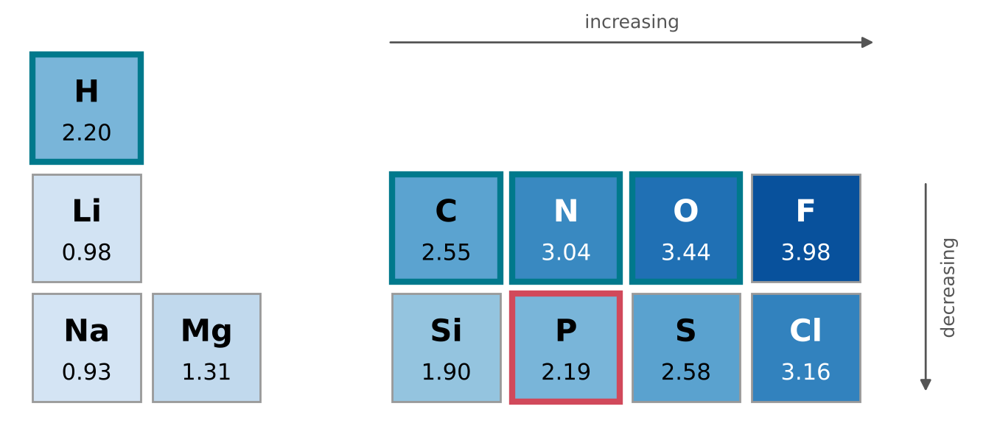
Two trends are visible. Across a row of the periodic table, electronegativity increases from left to right, as the nuclear charge increases while the valence electrons remain in the same shell; this parallels the trend in ionisation energy (Figure 2.3). Down a column, electronegativity decreases, because the valence electrons lie in a shell farther from the nucleus: phosphorus (2.19) is much less electronegative than nitrogen (3.04), although both have five valence electrons. Oxygen and nitrogen are the most electronegative of the RNA elements; carbon, hydrogen and phosphorus lie close together, between 2.19 and 2.55.
Polar bonds
A covalent bond in which the electrons are shared unequally is a polar bond. Its more electronegative end carries a small excess of negative charge and the other end a small deficit. These are written \(\delta-\) and \(\delta+\) (\(\delta\), delta, meaning “a fraction of”), to distinguish them from the full charges of ions. The larger the difference in electronegativity, the more polar the bond. From Table 2.4, the differences for some bonds that occur in RNA and its precursors are:
| Bond | \(\Delta\chi\) | Negative end |
|---|---|---|
| C–H | 0.35 | C |
| C–N | 0.49 | N |
| N–H | 0.84 | N |
| C–O | 0.89 | O |
| O–H | 1.24 | O |
| P–O | 1.25 | O |
C–H bonds are nearly non-polar. O–H and P–O bonds are strongly polar, with the negative charge on oxygen. When the difference becomes very large, as between sodium (0.93) and chlorine (3.16), the electron is not shared but effectively transferred, and the result is a pair of ions held together by electrostatic attraction, an ionic bond. Covalent and ionic bonding are the two ends of a continuous range, and most bonds in biological molecules lie between them, at the covalent end.
Dipole moments
Separated charges \(+q\) and \(-q\) at a distance \(d\) form an electric dipole, whose strength is measured by the dipole moment
\[ \mu = q\,d \]
in units of coulomb-metres (C m). For molecules the customary unit is the debye (D): 1 D = 3.335 64 × 10−30 C m, the dipole moment of charges of ±10−10 statcoulomb (the unit of charge of the older centimetre-gram-second system) separated by 1 Å.
A molecule as a whole has a dipole moment if the dipoles of its polar bonds do not cancel. Water, with two polar O–H bonds at an angle of 104.48°, has a dipole moment of 1.857 D; ammonia has 1.476 D; and hydrogen cyanide 2.980 D (National Institute of Standards and Technology 2022). Methane has four slightly polar C–H bonds, but they point to the corners of a regular tetrahedron and cancel exactly: its dipole moment is zero (National Institute of Standards and Technology 2022). A molecule with a dipole moment is called a polar molecule. The shape of a molecule (Section 2.3) and the polarity of its bonds therefore together determine whether it is polar (Figure 2.9).
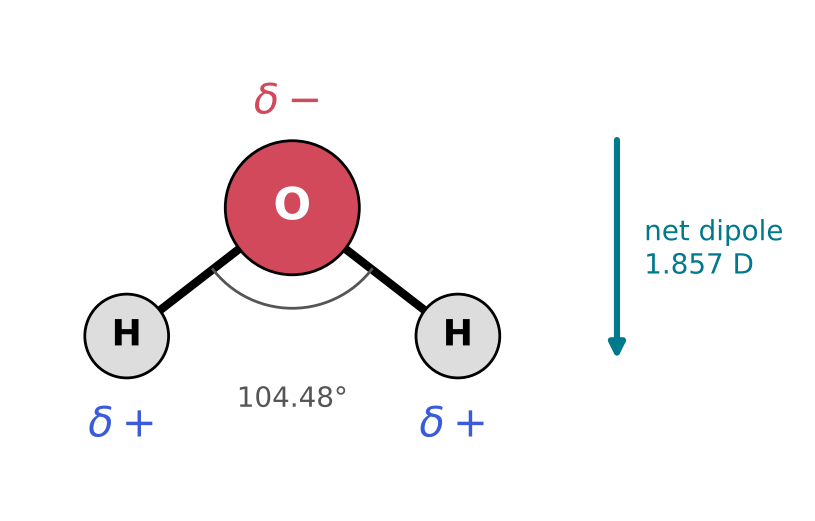
Consequence for this book
Oxygen and nitrogen, the most electronegative elements of RNA, make every O–H, N–H, C–O and P–O bond polar. Polar bonds are the sites at which most chemical reactions in this book take place, and polar molecules attract each other and dissolve in water. The polarity of water itself, the subject of Section 2.6, underlies the hydrogen bonds that hold the two strands of a nucleic acid together.
2.5 Forces between molecules
Bonds within molecules and forces between them
Covalent bonds hold the atoms of a molecule together. Molecules also attract one another, by much weaker intermolecular forces. These forces do not join atoms into new molecules, and they are broken and re-formed continually at ordinary temperatures. They nevertheless determine whether a substance is a gas, a liquid or a solid, whether it dissolves in water, and, in RNA, whether two strands pair and how a single strand folds. All intermolecular forces are electrostatic in origin: they arise from the attraction between regions of positive and negative charge on neighbouring molecules.
Dipole-dipole and dispersion forces
Polar molecules (Section 2.4) attract each other because the positive end of one is drawn towards the negative end of another. This is a dipole-dipole interaction.
Non-polar molecules attract each other too, more weakly. The electron cloud of any atom or molecule fluctuates, so that at any instant it may have a small, temporary dipole. That dipole distorts the electron cloud of a neighbouring molecule, inducing a dipole in it, and the two temporary dipoles attract. This is the dispersion force (also called the London force). It acts between all atoms and molecules, and it is larger for larger molecules, whose electron clouds contain more electrons and are more easily distorted. Dipole-dipole and dispersion interactions, together with related interactions between permanent and induced dipoles, are collectively called van der Waals forces.
The hydrogen bond
One intermolecular interaction is of particular importance for water and for nucleic acids. The International Union of Pure and Applied Chemistry (IUPAC) defines it as follows: “The hydrogen bond is an attractive interaction between a hydrogen atom from a molecule or a molecular fragment X–H in which X is more electronegative than H, and an atom or a group of atoms in the same or a different molecule, in which there is evidence of bond formation” (Arunan et al. 2011).
A hydrogen bond is written X–H···Y, where the dotted line marks the hydrogen bond and the solid line the covalent bond. X is the hydrogen-bond donor (the atom to which hydrogen is covalently bonded) and Y is the hydrogen-bond acceptor. In the molecules of this book, X and Y are usually oxygen or nitrogen, the most electronegative of the RNA elements (Table 2.4), and Y carries a lone pair. According to the IUPAC recommendations, the forces involved include electrostatic attraction, together with contributions from charge transfer and dispersion; the X–H bond is polarised; and the X–H···Y angle is usually close to 180°, and should preferably be above 110°, the bond being stronger the closer the angle is to 180° (Arunan et al. 2011). Hydrogen bonds are therefore directional, unlike dispersion forces. The earlier IUPAC glossary of 1994 gave the associated energies as usually less than 20 to 25 kJ mol−1, with a few exceptions involving fluorine (IUPAC, n.d.d) — weaker than covalent bonds, but strong enough to dominate the behaviour of water.
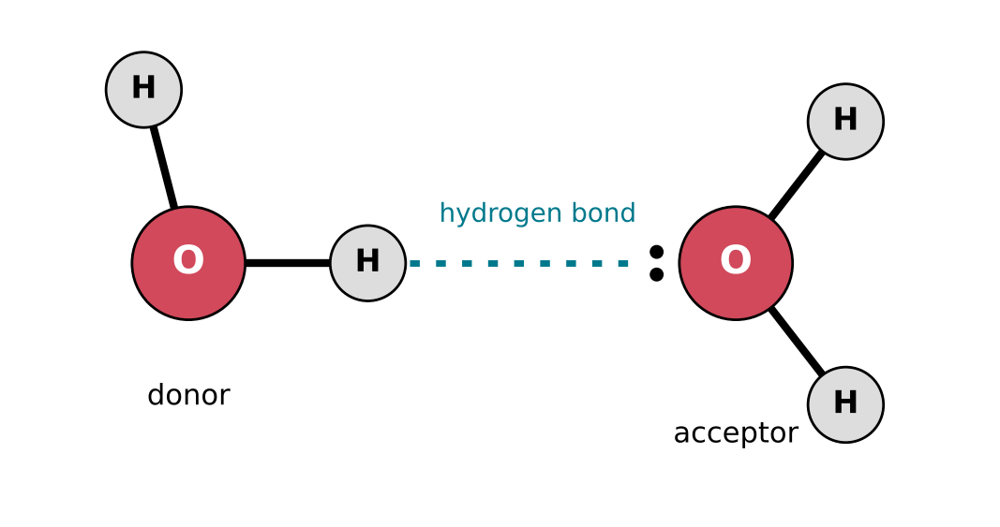
Evidence from boiling points
Intermolecular forces must be overcome when a liquid boils, so a higher boiling point indicates stronger forces between the molecules. Table 2.6 compares the normal boiling points (at a pressure of one standard atmosphere) of four small molecules containing hydrogen (National Institute of Standards and Technology, n.d.b).
| Substance | Formula | Molar mass (g mol−1) | Normal boiling point (K) | (°C) |
|---|---|---|---|---|
| Methane | CH4 | 16.04 | 111 ± 2 | −162 |
| Water | H2O | 18.02 | 373.17 ± 0.04 | 100.02 |
| Hydrogen fluoride | HF | 20.01 | 292.7 | 19.6 |
| Hydrogen sulfide | H2S | 34.08 | 212.87 | −60.28 |
Methane and water have almost the same molar mass, and therefore similar dispersion forces, yet water boils 262 K higher. Methane is non-polar and forms no hydrogen bonds; water forms extensive hydrogen bonds through its two O–H groups and two lone pairs. The comparison with hydrogen sulfide is equally instructive. Sulfur lies directly below oxygen in the periodic table, and H2S is nearly twice as heavy as H2O, so its dispersion forces are stronger; yet it boils 160 K lower. Sulfur (electronegativity 2.58) is much less electronegative than oxygen (3.44), and the hydrogen bonds formed by H2S are much weaker than those of water. Hydrogen fluoride, with the most electronegative element of all, also has an anomalously high boiling point for its size. Figure 2.11 summarises the comparison.
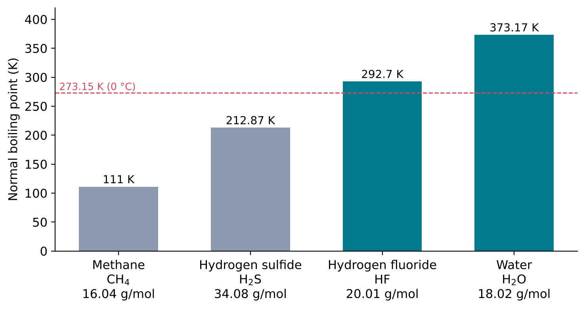
The hydrophobic effect
Non-polar molecules, such as hydrocarbons, dissolve poorly in water and tend to cluster together when placed in it; oil and water separate. This is the hydrophobic effect (from the Greek for “water-fearing”). It is not caused by a special attraction between the non-polar molecules. Rather, a non-polar molecule cannot form hydrogen bonds, and the water molecules around it are restricted in the hydrogen bonds they can form with each other. Clustering the non-polar molecules together reduces the area of contact with water and so the number of water molecules affected. Molecules or parts of molecules that interact favourably with water, such as polar and charged groups, are called hydrophilic (“water-loving”); non-polar ones are hydrophobic.
Consequence for this book
Two strands of RNA are held together by hydrogen bonds between their bases, and the stacking of the flat bases on each other, discussed in Chapter 7, also depends on interactions with the surrounding water. Hydrogen bonds and the hydrophobic effect will therefore return in Chapter 7, where they determine how RNA pairs and folds. They are equally central to the next section, because they give water its unusual properties as a solvent.
2.6 Water as a solvent
Why water matters here
Most of the chemical steps described in the rest of this book are thought to have taken place in water or at its surface: in ponds, oceans, hydrothermal fluids or thin films on minerals. Water is not an inert background. It dissolves the reactants, it carries electric charges between them, and it takes part in reactions as a reactant and a product. This section collects the properties of water that later chapters will rely on.
A small, polar molecule with four hydrogen-bonding sites
A water molecule is bent (H–O–H angle 104.48°) and polar (dipole moment 1.857 D) (National Institute of Standards and Technology 2022). Its oxygen atom carries two lone pairs and is bonded to two hydrogen atoms (Figure 2.4). Each molecule can therefore donate two hydrogen bonds, through its two O–H groups, and accept two, through its two lone pairs. In liquid water, each molecule is linked to its neighbours by a network of hydrogen bonds that are constantly broken and re-formed. This network is responsible for the high boiling point of water (Table 2.6), and also for its ability to dissolve other polar molecules: a molecule that can form hydrogen bonds with water, such as an alcohol, a sugar or a nucleobase, can take a place in the network.
Dissolving ions
Water also dissolves ionic compounds, such as sodium chloride, which do not dissolve in non-polar liquids. Two properties of water are responsible.
First, water strongly weakens the electrostatic force between charges. In a vacuum, two charges \(q_1\) and \(q_2\) at a distance \(r\) exert on each other the force given by Coulomb’s law,
\[ F = \frac{q_1 q_2}{4\pi\varepsilon_0 r^2} \]
where \(\varepsilon_0\) is the electric constant (the permittivity of vacuum). In a medium, the force is reduced by a factor \(\varepsilon_{\mathrm{r}}\), the relative permittivity (also called the dielectric constant) of the medium:
\[ F = \frac{q_1 q_2}{4\pi\varepsilon_0 \varepsilon_{\mathrm{r}} r^2} \]
For liquid water at 25 °C and 0.1 MPa, \(\varepsilon_{\mathrm{r}}\) = 78.375 (International Association for the Properties of Water and Steam 2011). The attraction between a sodium ion and a chloride ion in water is therefore almost eighty times weaker than at the same distance in a vacuum, and the ions can separate.
Second, water molecules arrange themselves around each dissolved ion, forming a hydration shell. Around a positive ion, such as Na+, the water molecules turn their negative oxygen ends towards the ion; around a negative ion, such as Cl−, they turn their positive hydrogen atoms towards it (Figure 2.12). The attraction between the ion and the oriented water dipoles stabilises the ion in solution.
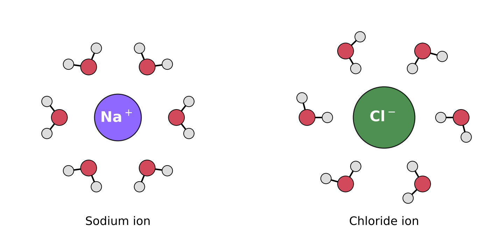
Self-ionisation of water
Water itself ionises to a small extent. A proton (a hydrogen nucleus, H+) passes from one water molecule to another:
\[ 2\,\mathrm{H_2O} \rightleftharpoons \mathrm{H_3O^+} + \mathrm{OH^-} \]
The products are the hydronium ion, H3O+, and the hydroxide ion, OH−. The double arrow indicates that the reaction runs in both directions and reaches an equilibrium, in which forward and reverse reactions occur at equal rates. At equilibrium, the product of the concentrations of the two ions (strictly, of their activities, which are effective concentrations corrected for interactions between ions) is constant at a given temperature. This constant is the ion product of water, Kw:
\[ K_{\mathrm{w}} = a(\mathrm{H_3O^+})\,a(\mathrm{OH^-}) \]
where \(a\) denotes activity, expressed relative to a standard concentration of 1 mol per litre. Because Kw is very small, it is usually given as pKw = −log10 Kw. At 25 °C, pKw = 13.99 (International Association for the Properties of Water and Steam 2024): in pure water at that temperature, the concentrations of hydronium and hydroxide ions are each about 10−7 mol per litre, and, since liquid water at 25 °C contains about 55 mol of water molecules per litre (its density is 997.05 kg m−3 (International Association for the Properties of Water and Steam 2011)), only about two water molecules in a thousand million are ionised at any moment.
Acids, bases and pH
An acid is a substance that donates a proton (H+) to another molecule, and a base is a substance that accepts one. In water, an acid raises the concentration of H3O+ and a base raises that of OH−. The acidity of a solution is expressed by its pH:
\[ \mathrm{pH} = -\log_{10} a(\mathrm{H_3O^+}) \]
Since the two activities multiply to Kw, a solution is neutral, with equal amounts of H3O+ and OH−, when pH = pKw/2. A solution with a lower pH is acidic, and one with a higher pH is basic (or alkaline). Each unit of pH corresponds to a factor of ten in the hydronium-ion activity.
The familiar statement that neutral water has pH 7 is true only near 25 °C. The ion product of water depends strongly on temperature (Table 2.7). Neutral water has pH 7.48 at 0 °C and 6.13 at 100 °C. This matters for the origin of life, because the settings considered in Chapter 3 range from cold pools to hot springs and hydrothermal vents: a pH measured at one temperature cannot be compared with one at another without taking this into account.
| Temperature (°C) | pKw | pH of neutral water (pKw/2) |
|---|---|---|
| 0 | 14.95 | 7.48 |
| 25 | 13.99 | 7.00 |
| 100 | 12.25 | 6.13 |
Consequence for this book
Water dissolves polar molecules and ions, weakens the forces between charges by a factor of nearly eighty, and supplies and removes protons. Many of the molecules on the way to RNA, including the phosphate groups of nucleotides, carry charges whose state depends on pH, and many of the reactions that join them are reversible reactions with water itself. Chapter 5 will show that joining building blocks by removing water is one of the central difficulties of making RNA in water.
2.7 Energy in chemistry
Bonds store energy
Breaking a covalent bond always requires energy, and forming one always releases energy. The bond enthalpy of a bond is the energy needed to break it in a molecule in the gas phase, at constant pressure, per mole of bonds. (One mole is 6.022 140 76 × 1023 particles, the Avogadro number (National Institute of Standards and Technology, n.d.a); chemical energies are usually given in kilojoules per mole, kJ mol−1.)
Bond enthalpies can be calculated from measured enthalpies of formation, defined below. The values for a few bonds, calculated in this way from CODATA reference data compiled in the NIST Chemistry WebBook (National Institute of Standards and Technology, n.d.b; Cox, Wagman, and Medvedev 1984), are:
| Bond | Molecule | Bond enthalpy (kJ mol−1) |
|---|---|---|
| H–H | H2 | 436.0 |
| C–H | CH4 (average of four) | 415.9 |
| O–H | H2O (average of two) | 463.5 |
| N\(\equiv\)N | N2 | 945.4 |
The triple bond of N2 is more than twice as strong as any of the single bonds in the table. This is why nitrogen gas, which makes up most of the Earth’s atmosphere today, is chemically so unreactive, and why converting it into compounds that can enter the chemistry of RNA is difficult, a problem that returns in Chapter 3.
Enthalpy
The heat exchanged by a chemical reaction carried out at constant pressure equals the change in a quantity called enthalpy, H. A reaction that releases heat to its surroundings has a negative enthalpy change, ΔH < 0, and is called exothermic; one that absorbs heat has ΔH > 0 and is endothermic.
Enthalpy changes are tabulated as standard enthalpies of formation, ΔfH°: the enthalpy change when one mole of a compound is formed from its elements in their most stable forms, with all substances in their standard states (here, a pressure of 1 bar and a temperature of 298.15 K). For liquid water, ΔfH° = −285.830 kJ mol−1; for water vapour, −241.826 kJ mol−1 (National Institute of Standards and Technology, n.d.b; Cox, Wagman, and Medvedev 1984). Because enthalpy depends only on the state of a system and not on how it got there, the enthalpy change of any reaction can be calculated as the sum of the enthalpies of formation of the products minus that of the reactants. This is Hess’s law. For example, the bond enthalpy of O–H in Table 2.8 was obtained by calculating the enthalpy needed to break a mole of water vapour into isolated atoms:
\[ \Delta H = 2\Delta_{\mathrm{f}}H^\circ(\mathrm{H}) + \Delta_{\mathrm{f}}H^\circ(\mathrm{O}) - \Delta_{\mathrm{f}}H^\circ(\mathrm{H_2O,\,g}) = 2(217.998) + 249.18 - (-241.826) = 927.0\ \mathrm{kJ\,mol^{-1}} \]
and dividing by the two O–H bonds.
Entropy
Whether a process occurs does not depend on energy alone. Water evaporates from an open dish at room temperature although evaporation absorbs heat (its ΔH is positive, as calculated below). The second quantity that decides the direction of change is entropy, S. Entropy measures the number of microscopic arrangements of a system’s particles and energy that are consistent with its macroscopic state. A gas, whose molecules move freely through a large volume, has a higher entropy than the liquid from which it formed: the standard molar entropy of water vapour is 188.835 J K−1 mol−1, and that of liquid water 69.95 J K−1 mol−1 (National Institute of Standards and Technology, n.d.b; Cox, Wagman, and Medvedev 1984). The second law of thermodynamics states that in any spontaneous process, the total entropy of a system and its surroundings increases.
Gibbs energy
For a process at constant temperature and pressure, both criteria can be combined into a single quantity, the Gibbs energy (also called the Gibbs free energy):
\[ G = H - TS, \qquad \Delta G = \Delta H - T\Delta S \]
where T is the absolute temperature. A process at constant temperature and pressure can occur spontaneously only if it lowers the Gibbs energy of the system, ΔG < 0. If ΔG > 0, the reverse process is the spontaneous one. If ΔG = 0, the system is at equilibrium.
The boiling of water illustrates the balance between the two terms. For the evaporation of one mole of water at 298.15 K, using the values above,
\[ \Delta H = -241.826 - (-285.830) = +44.004\ \mathrm{kJ\,mol^{-1}}, \qquad \Delta S = 188.835 - 69.95 = +118.89\ \mathrm{J\,K^{-1}\,mol^{-1}} \]
\[ \Delta G = 44.004 - 298.15 \times 0.11889 = +8.56\ \mathrm{kJ\,mol^{-1}} \]
ΔG is positive: at 25 °C and 1 bar, liquid water does not turn spontaneously into vapour at 1 bar. The enthalpy term favours the liquid, the entropy term favours the gas, and the entropy term grows with temperature. The two balance (ΔG = 0) when T = ΔH/ΔS = 44 004 / 118.89 \(\approx\) 370 K. Figure 2.13 shows ΔG as a function of temperature. This simple estimate, which assumes that ΔH and ΔS do not change with temperature, comes within 3 K of the measured normal boiling point of water, 373.17 K (Table 2.6). (The pressures differ slightly: the standard state is 1 bar, the normal boiling point refers to 1 atmosphere, 1.013 25 bar.)
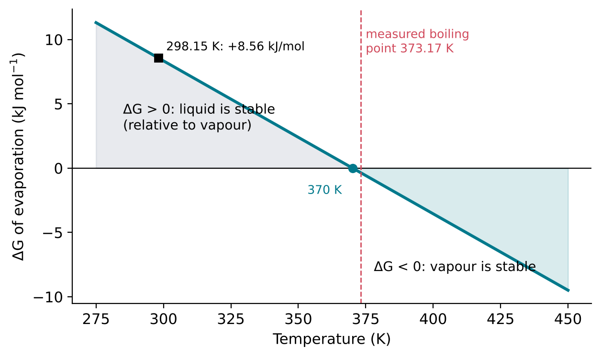
Thermodynamically favourable is not the same as fast
The formation of liquid water from hydrogen and oxygen,
\[ \mathrm{H_2(g)} + \tfrac{1}{2}\,\mathrm{O_2(g)} \rightarrow \mathrm{H_2O(l)} \]
has ΔH = −285.830 kJ mol−1 and ΔS = 69.95 − 130.680 − ½(205.152) = −163.31 J K−1 mol−1 (National Institute of Standards and Technology, n.d.b; Cox, Wagman, and Medvedev 1984), so that at 298.15 K ΔG = −285.830 + 298.15 × 0.16331 = −237.14 kJ mol−1. The reaction is strongly favourable. Yet a mixture of hydrogen and oxygen can be kept at room temperature without reacting appreciably until it is ignited. Thermodynamics states whether a reaction can occur; it says nothing about how fast it occurs. That is the subject of the next section, and the distinction is central to the origin of life: many reactions needed to build RNA are favourable but slow, and some that would destroy it, such as its reaction with water, are favourable as well.
Consequence for this book
Every step on the path to RNA must satisfy ΔG < 0 under the conditions where it takes place, or must be coupled to another process that supplies Gibbs energy. Joining building blocks into a chain while releasing water is generally unfavourable in water, as Chapter 5 will discuss; how this obstacle may have been overcome is one of the central questions of the book.
2.8 Reaction rates
Rate and rate constant
Section 2.7 ended with a mixture of hydrogen and oxygen that does not react although the reaction is strongly favourable. The speed of a reaction is described by its rate of reaction: for a reaction a A + b B → p P + q Q, the rate is the rate of change of the concentration of any reactant or product, divided by its coefficient in the equation (IUPAC, n.d.e):
\[ v = -\frac{1}{a}\frac{\mathrm{d}[\mathrm{A}]}{\mathrm{d}t} = -\frac{1}{b}\frac{\mathrm{d}[\mathrm{B}]}{\mathrm{d}t} = \frac{1}{p}\frac{\mathrm{d}[\mathrm{P}]}{\mathrm{d}t} = \frac{1}{q}\frac{\mathrm{d}[\mathrm{Q}]}{\mathrm{d}t} \]
where square brackets denote concentration and d/dt denotes the rate of change with time. The rate usually depends on the concentrations of the reactants. For many reactions it is proportional to a product of concentrations, for example \(v = k[\mathrm{A}][\mathrm{B}]\), where the proportionality factor k is the rate constant. The rate constant does not depend on concentration, but it depends strongly on temperature.
Activation energy
For two molecules to react, existing bonds must be stretched and partly broken before new ones can form. The arrangement of atoms at the point of highest energy along this path is called the transition state. The energy that the reactants must acquire to reach it is the activation energy, Ea (Figure 2.14). Molecules gain this energy through collisions, and at any temperature only a fraction of them have enough. The activation energy is a barrier: it does not affect the overall Gibbs energy change of the reaction, but it determines how fast the reaction proceeds.
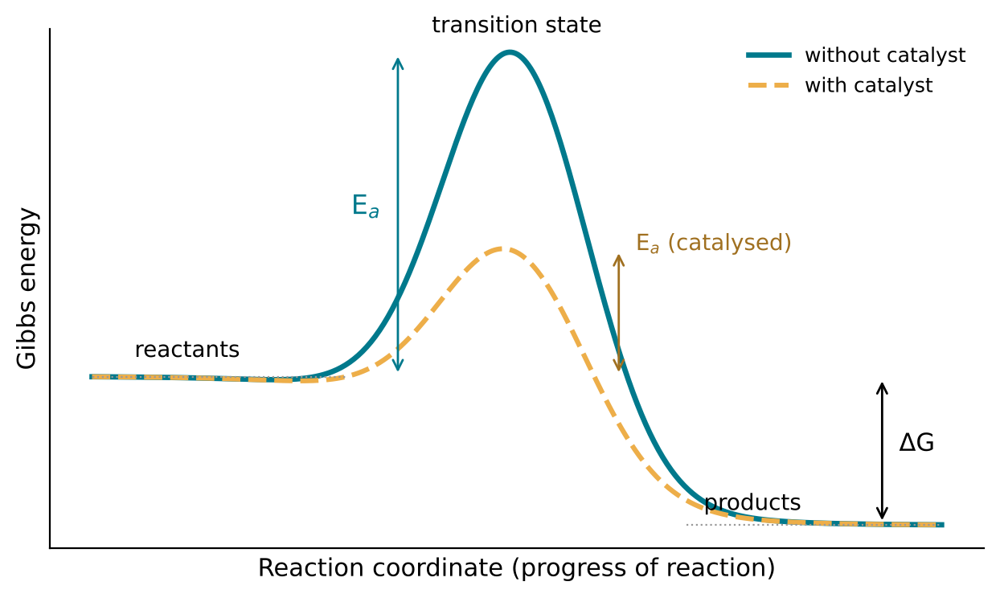
The Arrhenius equation
The dependence of a rate constant on temperature is described by the Arrhenius equation (IUPAC, n.d.a):
\[ k = A\,\mathrm{e}^{-E_{\mathrm{a}}/RT} \]
Here A is the pre-exponential factor, which has the same units as k; Ea is the activation energy in J mol−1; T is the absolute temperature; and R is the molar gas constant, 8.314 462 618 J K−1 mol−1 (National Institute of Standards and Technology, n.d.a). In its original form, A and Ea are taken as independent of temperature (IUPAC, n.d.a). More generally, IUPAC defines the activation energy through the temperature dependence of the rate constant itself, \(E_{\mathrm{a}} = RT^2\,\mathrm{d}(\ln k)/\mathrm{d}T\) (IUPAC, n.d.c).
The exponential makes rates extremely sensitive to temperature and to the size of the barrier. Taking the ratio of the rate constants at two temperatures, A cancels:
\[ \frac{k(T_2)}{k(T_1)} = \exp\!\left[\frac{E_{\mathrm{a}}}{R}\left(\frac{1}{T_1} - \frac{1}{T_2}\right)\right] \]
For a reaction with Ea = 50 kJ mol−1, warming from 25 °C (298.15 K) to 35 °C (308.15 K) increases the rate constant by a factor of 1.92, and warming to 100 °C by a factor of about 58. For Ea = 100 kJ mol−1, the corresponding factors are 3.70 and about 3300 (Figure 2.15). The same equation shows that a reaction at 0 °C is slower than at 25 °C by a factor of 6.3 (for 50 kJ mol−1) or 40 (for 100 kJ mol−1). Temperature is therefore one of the most powerful controls on prebiotic chemistry: it speeds up the reactions that build molecules, and equally those that destroy them.
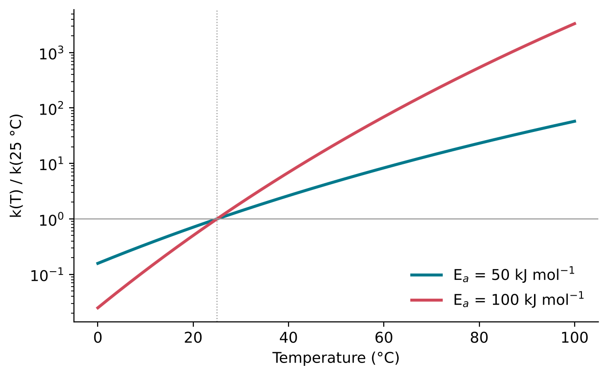
Catalysts
A catalyst is a substance that increases the rate of a reaction without modifying the overall standard Gibbs energy change of the reaction (IUPAC, n.d.b). It does so by providing an alternative reaction path with a lower activation energy (Figure 2.14), and it is regenerated at the end of each cycle, so that a small amount can convert a large amount of reactant. Because a catalyst does not change ΔG, it speeds up the forward and reverse reactions alike and does not change the position of equilibrium; it only allows equilibrium to be reached sooner. The effect of lowering the barrier is large: by the Arrhenius equation, lowering Ea by 20 kJ mol−1 at 25 °C, with A unchanged, increases the rate constant by a factor of about 3200.
Catalysis by one of the products of a reaction is called autocatalysis (IUPAC, n.d.b). In an autocatalytic reaction, the more product there is, the faster more of it is made. A molecule that catalyses the formation of copies of itself is the chemical core of replication, and autocatalysis will return in Section 8.6.
The catalysts of living cells are mostly proteins, called enzymes, but some are RNA molecules, called ribozymes. The discovery that RNA can act as a catalyst, as well as carry genetic information, is one of the foundations of the hypothesis that RNA preceded proteins; it is described in Chapter 7.
Consequence for this book
Whether a molecule accumulates on the early Earth depends on a competition between rates: the rate at which it is formed, and the rates at which it is destroyed, for example by reaction with water. Thermodynamics (Section 2.7) determines which direction is downhill; kinetics determines which processes are fast enough to matter. Both will be used throughout the remaining chapters.
Summary
- Chemical reactions rearrange electrons; nuclei are unchanged.
- Electrons in atoms occupy orbitals, grouped into shells (n = 1, 2, 3, …) and subshells (s, p, d, f). An s subshell has one orbital, p three, d five.
- By the Pauli exclusion principle, each orbital holds at most two electrons of opposite spin; shell n holds at most 2n2 electrons.
- The ground-state configurations of the RNA elements are H 1s1, C 1s2 2s2 2p2, N 1s2 2s2 2p3, O 1s2 2s2 2p4 and P [Ne] 3s2 3p3.
- Valence electrons, in the outermost shell, take part in bonding: H 1, C 4, N 5, O 6, P 5.
- Measured ionisation energies confirm the shell structure: they peak at the noble gases and drop sharply at the start of each new shell.
- A covalent bond is a shared pair of electrons. By sharing, H reaches two electrons and C, N and O reach eight (the octet rule), so they usually form 1, 4, 3 and 2 bonds respectively.
- Lewis structures show bonds as lines and lone pairs as dots. Two or three shared pairs form double or triple bonds; higher bond order gives shorter bonds (C–C 1.536 Å, C=C 1.339 Å, C\(\equiv\)C 1.203 Å).
- Electron pairs around an atom repel each other (VSEPR). Four pairs point to the corners of a tetrahedron (109.47°): methane is tetrahedral, ammonia pyramidal (106.67°) and water bent (104.48°).
- Hybrid orbitals describe bonding geometry: sp3 (tetrahedral), sp2 (planar, 120°) and sp (linear, 180°). Double and triple bonds contain one \(\sigma\) bond plus one or two \(\pi\) bonds.
- Electronegativity measures how strongly an atom attracts shared electrons (Pauling scale: H 2.20, C 2.55, N 3.04, O 3.44, P 2.19). Unequal sharing makes bonds polar; O–H and P–O bonds are strongly polar, C–H bonds nearly non-polar.
- A molecule is polar if its bond dipoles do not cancel: water (1.857 D) and ammonia (1.476 D) are polar; methane, by symmetry, is not.
- Molecules attract each other through dipole-dipole and dispersion (van der Waals) forces, and, when an X–H group with electronegative X meets an electronegative acceptor, through hydrogen bonds X–H···Y, which are directional.
- Hydrogen bonds explain why water (373.17 K) boils far above methane (111 K) and hydrogen sulfide (212.87 K). Non-polar molecules cluster in water: the hydrophobic effect.
- Water dissolves polar molecules through hydrogen bonds and ions through its high relative permittivity (78.4 at 25 °C) and hydration shells.
- Water self-ionises: 2 H2O \(\rightleftharpoons\) H3O+ + OH−, with pKw = 13.99 at 25 °C. pH = −log10 a(H3O+); neutral pH is pKw/2, which is 7.00 at 25 °C but 7.48 at 0 °C and 6.13 at 100 °C.
- Bond enthalpies measure bond strength: H–H 436.0, C–H 415.9, O–H 463.5 and N\(\equiv\)N 945.4 kJ mol−1. The very strong N\(\equiv\)N bond makes N2 unreactive.
- A process at constant T and p is spontaneous only if ΔG = ΔH − TΔS < 0. ΔG predicts whether a reaction can occur, not how fast: H2 + ½O2 → H2O has ΔG = −237.14 kJ mol−1 but does not proceed without ignition.
- Reaction rates depend on an activation energy barrier. The Arrhenius equation, k = A e−Ea/RT, makes rates very sensitive to temperature: for Ea = 100 kJ mol−1, warming from 25 °C to 100 °C speeds a reaction about 3300-fold.
- A catalyst lowers the activation energy without changing ΔG or the equilibrium. Autocatalysis, in which a product catalyses its own formation, is the chemical core of replication.
Exercises
- How many electrons can the n = 4 shell hold? List its subshells and the number of electrons each can hold.
- Write the full electron configuration (without the [Ne] abbreviation) of phosphorus and of sulfur, and state the number of valence electrons of each.
- Draw box-and-arrow diagrams for the 2p electrons of carbon, nitrogen and oxygen, following Hund’s rule.
- Convert the first ionisation energy of hydrogen (13.598 eV) into joules, and into kilojoules per mole of atoms (Avogadro constant 6.022 140 76 × 1023 mol−1, exact (National Institute of Standards and Technology, n.d.a)).
- Explain why the first ionisation energy of sodium is much lower than that of neon, although sodium has one more proton.
- Nitrogen and phosphorus have the same number of valence electrons. Using Table 2.1, explain why the first ionisation energy of phosphorus is lower than that of nitrogen.
- Draw Lewis structures for formaldehyde (CH2O, with carbon as the central atom) and for carbon dioxide (CO2). State the bond order of each carbon-oxygen bond.
- Using the octet rule, predict the formula of the simplest compound of nitrogen with hydrogen and of oxygen with hydrogen, and check your answers against Figure 2.4.
- By what percentage is the carbon-carbon bond in acetylene shorter than that in ethane?
- Predict the shape of each molecule and the hybridisation of its central atom: formaldehyde (CH2O), carbon dioxide (CO2), and the ammonium ion (NH4+).
- Explain why the H–O–H angle in water (104.48°) is smaller than the H–C–H angle in methane (109.47°), although both central atoms are surrounded by four electron pairs.
- How many \(\sigma\) bonds and how many \(\pi\) bonds are there in a molecule of hydrogen cyanide?
- Using Table 2.4, rank the bonds C–H, N–H, O–H, P–O and C–N in order of increasing polarity, and mark the \(\delta-\) end of each.
- Carbon dioxide (CO2) is linear and contains two polar C=O bonds. Predict whether it has a dipole moment, and explain.
- Express the dipole moment of water in C m. If the charges were ±e (the elementary charge), how far apart would they have to be to give this dipole moment? Compare your answer with the O–H bond length.
- Identify the hydrogen-bond donors and acceptors in a molecule of ammonia, and draw a hydrogen bond between an ammonia molecule and a water molecule.
- Using Table 2.6, explain why H2S boils at a lower temperature than H2O although its molar mass is almost twice as large.
- Explain why methane dissolves poorly in water, using the idea of the hydrophobic effect.
- By what factor is the electrostatic force between two ions at a fixed distance reduced when they are moved from a vacuum into water at 25 °C?
- A solution at 25 °C has pH 5. Calculate the activity of H3O+ and of OH−. Is the solution acidic or basic?
- A hot spring at 100 °C has pH 6.5. Is it acidic, neutral or basic? Use Table 2.7.
- Using the standard enthalpies of formation of the gaseous atoms in this section, calculate the bond enthalpy of N\(\equiv\)N, and compare it with that of H–H.
- Using the data for water in this section, calculate ΔG for the evaporation of water at 350 K and at 390 K, assuming ΔH and ΔS are constant. At which temperature is evaporation spontaneous at 1 bar?
- A reaction has ΔH = −20 kJ mol−1 and ΔS = −100 J K−1 mol−1. Above what temperature does it stop being spontaneous?
- A reaction has Ea = 75 kJ mol−1. By what factor does its rate constant change between 25 °C and 50 °C?
- Explain why a catalyst cannot make a reaction with ΔG > 0 proceed spontaneously.
- RNA is both formed and destroyed by reactions that are faster at higher temperature. Explain, using the Arrhenius equation, why the net effect of heating on the amount of RNA depends on the activation energies of the two processes.